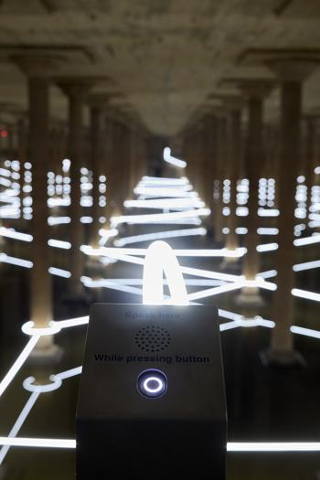
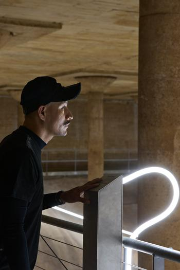
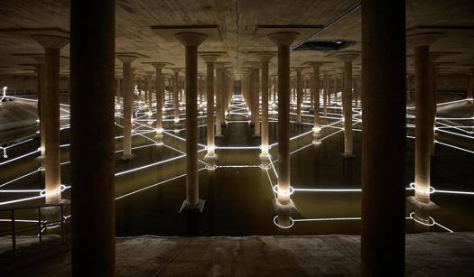
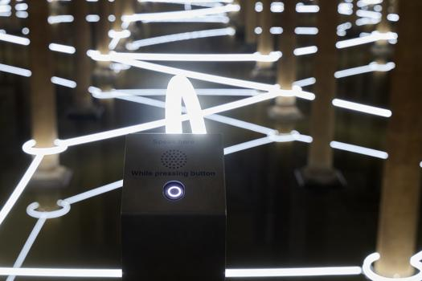
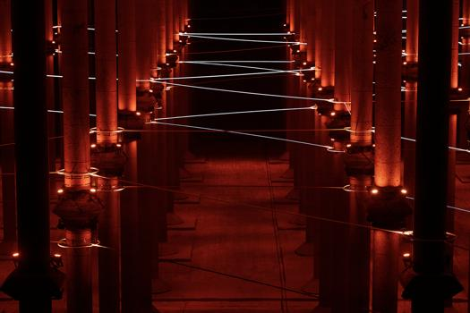
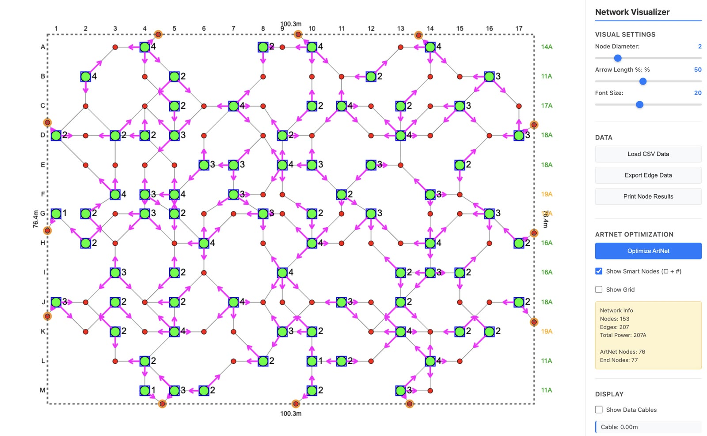

Undercurrents, 2026
| 👤for | Rafael Lozano-Hemmer |
|---|---|
| #Year | 2026 |
| 🔗Official Site | lozano-hemmer.com/undercurrents.php |
| 📋I did | Hardware |
A seemingly endless "switchboard" of connection unfolds throughout the cistern, where participant voices are transformed into pulses of light that travel along branching paths. Connected to this network are eight custom-made intercoms, each consisting of a microphone, a speaker, and a push button, placed at regular intervals along the perimeter. When a visitor presses an intercom button and speaks, their message is encoded into modulations of light brightness and visually transmitted along a path that may fork at any given cistern column (a "node"), bouncing and traveling steadily until it reaches another intercom, where it plays back slightly mixed with echoes of voices from the past.
Along the way, an AI system looks for matching patterns in an archive of recordings, including commissioned poems by poets Nick Flynn, Aris Kian, Martha Serpas, Jennifer Teets, and Roberto Tejada. With each new voice, an "echo" is produced from this memory, so that each message carries traces of what came before, blending into a poetic soundscape. At any given time, up to twelve participants can be sending and receiving voice messages live, setting the cistern alight with glimmering paths. If no one is participating, the piece begins to trigger itself automatically, as if dreaming, playing back curated voices and recalling earlier exchanges. A "timekeeper" wave of light is also periodically activated, scanning the entire space to clear any stranded messages.
The project features over 420,000 light pixels, controlled by a single custom-made computer program.
Source code and documentation: github.com/stephanschulz/light-network






Acknowledgment
This artwork by Rafael Lozano-Hemmer is the result of the combined efforts of a talented and diverse group of professionals. Each person has contributed unique skills and expertise to the creation of this piece. For more information about the team and their roles, please visit our official website.